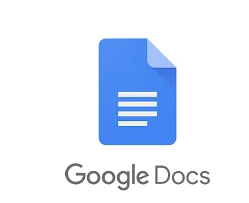

LAS 3 APLICACIONES WEB MÁS USADAS
1.- Google Docs

Fecha de lanzamiento:2006
Empresa encargada: Google
Descripción de la característica más atractiva: La capacidad de colaborar en tiempo real, lo que
permite a
varios usuarios editar un documento simultáneamente desde diferentes ubicaciones.
Tecnologías/herramientas implementadas:
- JavaScript
- HTML5
- Google Cloud Platform
- APIs de Google
Enlace:Google Docs
2. Facebook
Fecha de lanzamiento:2004
Empresa encargada: Meta Platforms, Inc. (antes Facebook Inc.)
Descripción de la característica más atractiva:Su red social que conecta a personas a nivel global,
permitiendo compartir fotos, videos, pensamientos y crear comunidades.
Tecnologías/herramientas implementadas:
- React
- PHP
- GraphQL
- Graph Database
Enlace:Facebook
3. Spotify
Fecha de lanzamiento:2008
Empresa encargada: Spotify AB
Descripción de la característica más atractiva:Su algoritmo de recomendación musical, que crea
listas de reproducción personalizadas basadas en el gusto musical del usuario.
Tecnologías/herramientas implementadas:>
- JavaScript
- Python
- PostgreSQL
- Google Cloud
Enlace:Spotify
4. Instagram

Fecha de lanzamiento:2010
Empresa encargada: Meta Platforms, Inc. (anteriormente Facebook, Inc.)
Descripción de la característica más atractiva:El enfoque en compartir imágenes y videos con
filtros visuales, lo que revolucionó las redes sociales al dar un giro hacia el contenido visual
atractivo y de fácil consumo.
Tecnologías/herramientas implementadas:
- React
- Python
- PostgreSQL
- Redis
Enlace:Instagram
5. X
Fecha de lanzamiento:2006
Empresa encargada: X Corp. (anteriormente Twitter, Inc.)
Descripción de la característica más atractiva:El uso de mensajes breves (tweets) para compartir
pensamientos, noticias e interactuar en tiempo real, siendo una plataforma clave para eventos en vivo y
noticias.
Tecnologías/herramientas implementadas:>
- Ruby on Rails
- Scala
- Redis
- MySQL
Enlace:X